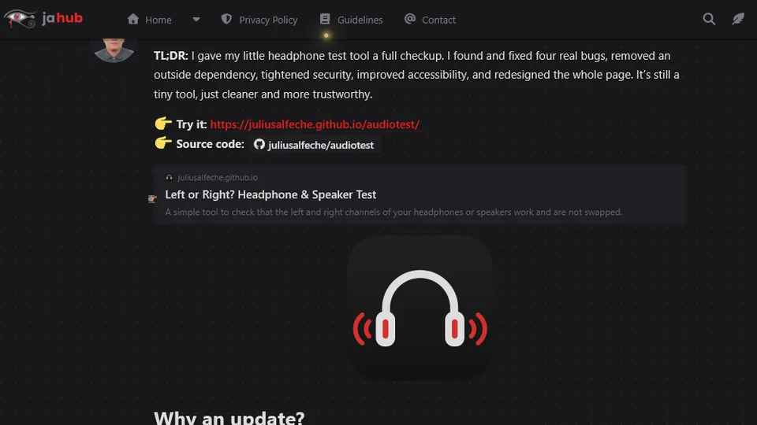
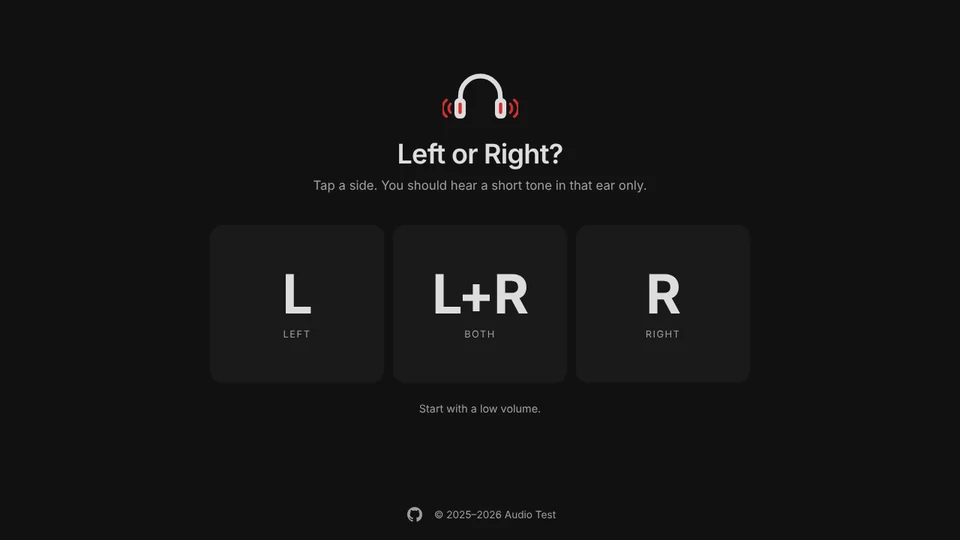
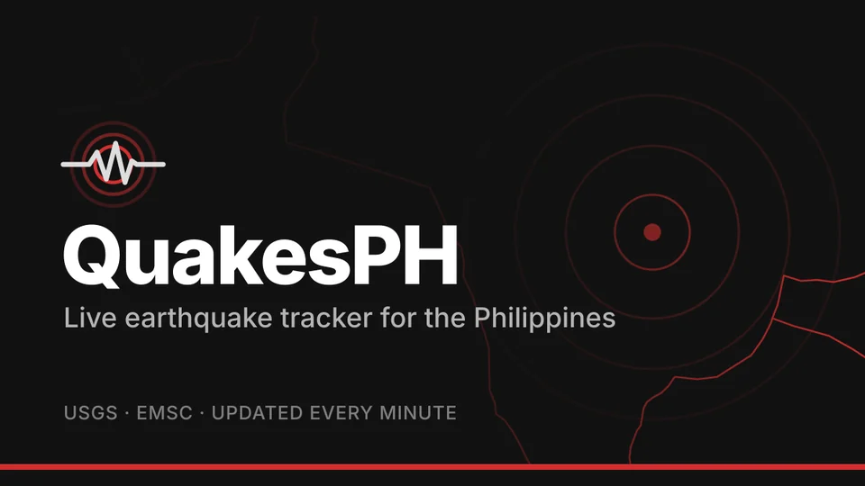
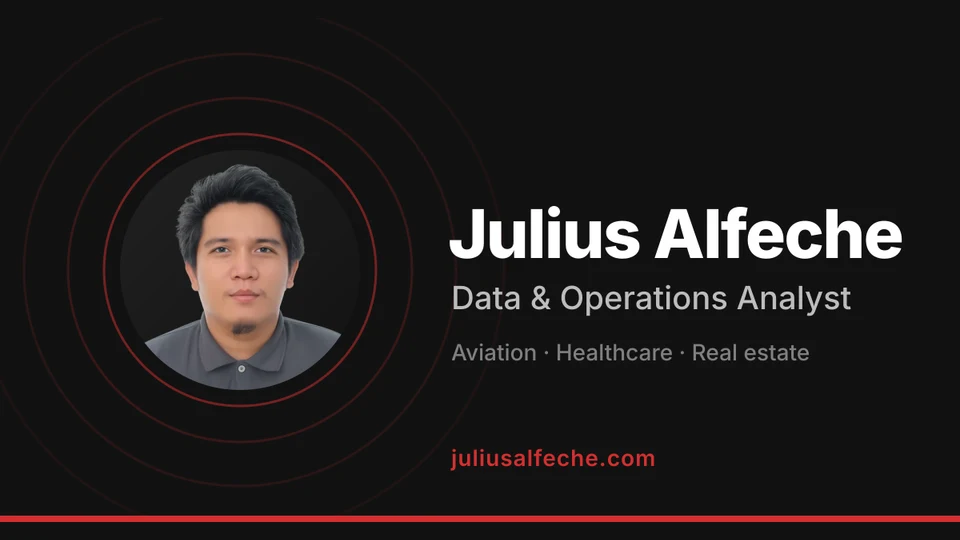

JAHub (opens in a new tab)
An interactive, community-driven discussion forum seamlessly integrated into my professional portfolio ecosystem, built using Flarum.
- Flarum
- Community
Data & Operations Analyst
Turning complex, manual processes into automated, structured reporting.
Versatile Data and Operations Analyst with 7 years of experience steering data-driven workflows for U.S.-based clients across aviation, healthcare, and real estate. Specialize in transforming complex, manual processes into automated, structured reporting systems. Proven track record of bridging the gap between raw operational data and executive decision-making while maintaining strict compliance standards.

An interactive, community-driven discussion forum seamlessly integrated into my professional portfolio ecosystem, built using Flarum.

A simple, accessible web tool that checks your headphones or speakers by playing a short tone in the left, right, or both channels, using the Web Audio API.

A progressive web app that tracks earthquakes across the Philippines on an interactive map, with live data from USGS and EMSC.

A digital, interactive version of my professional resume, built with plain HTML, CSS and JavaScript: fast on any device, with no frameworks and no trackers.
There are few things more aggravating than having your desktop or laptop fail precisely when you need it most. Whether you’re facing a tight deadline for a final paper, preparing for a critical conference, or simply needing to get your work done, computer repair becomes absolutely essential.
When seeking professional help, be wary of technicians who rely on simple “tune-ups”. While these may offer a temporary fix, they are often insufficient and don’t prevent the same problems from quickly recurring. For both the convenience-driven laptop user and the desktop owner, the need is the same: timely, efficient, and comprehensive repair that includes fully securing your computer to prevent future breakdowns.
Computers running any operating system, especially those with constant internet access, require frequent maintenance to stay secure. New vulnerabilities are constantly discovered and patched, making it a priority for every user to keep their system updated with the latest service packs and critical updates.
When a problem arises, users often consider returning their machine to the manufacturer, particularly if it’s still under warranty. While manufacturer repair is often the ideal choice in terms of expertise, the major drawback is the significant downtime waiting for the device to be shipped, serviced, and returned.
The reality is that most modern desktops and laptops, regardless of brand, can be competently serviced by any qualified local technician. Computer parts are generally universal or easily substituted with compatible replacements. This leads to the key question: who should you trust? Finding a truly qualified specialist who can handle your desktop or laptop repair in a professional, competent, and efficient manner can be challenging. I am here to offer that solution.
Numerous IT support tasks for computers and servers are now manageable remotely, meaning a technician doesn’t have to physically be there.
Creating effective, appealing websites that drive business success is a specialized talent. While many companies can build a basic site today, few can deliver one that actually achieves its goals.
In web design, success means achieving two things: attracting the right audience (targeted traffic) and effectively communicating your core message or completing a transaction (sale).
This requires developing smart, user-focused features that are both easy to use and advanced. Furthermore, pages must load quickly and be easily found by search engines.
As your business evolves, your website will need to keep pace. We offer comprehensive, budget-friendly maintenance services with quick turnaround times so you can delegate website tasks and dedicate more time to running your business.
OfficePartners360 Inc. — Cebu City, Philippines
Supported U.S. clients across aviation and healthcare with data analysis, compliance management, and operational reporting.
PhotoUp Inc. — Cebu City, Philippines
Asian College of Technology — Cebu City, Philippines
Department of Manpower Development and Placement — Cebu City, Philippines